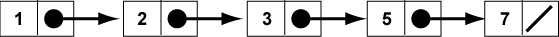

Except for the first item and last item, each item in the list has one successor and one predecessor. The first item in the list has one successor but no predecessor. The last itEM in the list has one predecessor but no successor.
Here (again) is a picture of a list of integers. This picture shows the conceptual structure of data and its relationships. In this picture, the arrows point from a node to its successor.
A linked list is one way (out of many) to implement the concept of an ordered list.
A linked list is made up of nodes. Each node contains (1) data, and (2) the address of the next node.

In the top picture of the conceptual ordered list an arrow represents the relationship between two data items.
In the bottom picture of a linked list, what does an arrow represent?